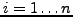

Next: Indirect Addressing for Binary Up: Function Naming Conventions Previous: Indirect Addressing for Binary
As illustrated above, functions generally have vector and scalar variants. In this example, the vector variants require all operands to be indexed. However, in some cases it is desirable to keep some arguments constant - i.e. never subscripted. For example the function
QLA_V_veq_c_times_V(c,z,b,n)multiplies an array of color vectors by a complex constant as in
c[i] = z*b[i]for . In this case we specify that the argument is constant (nonsubscripted) by converting the type abbreviation to lower case: ``c''.